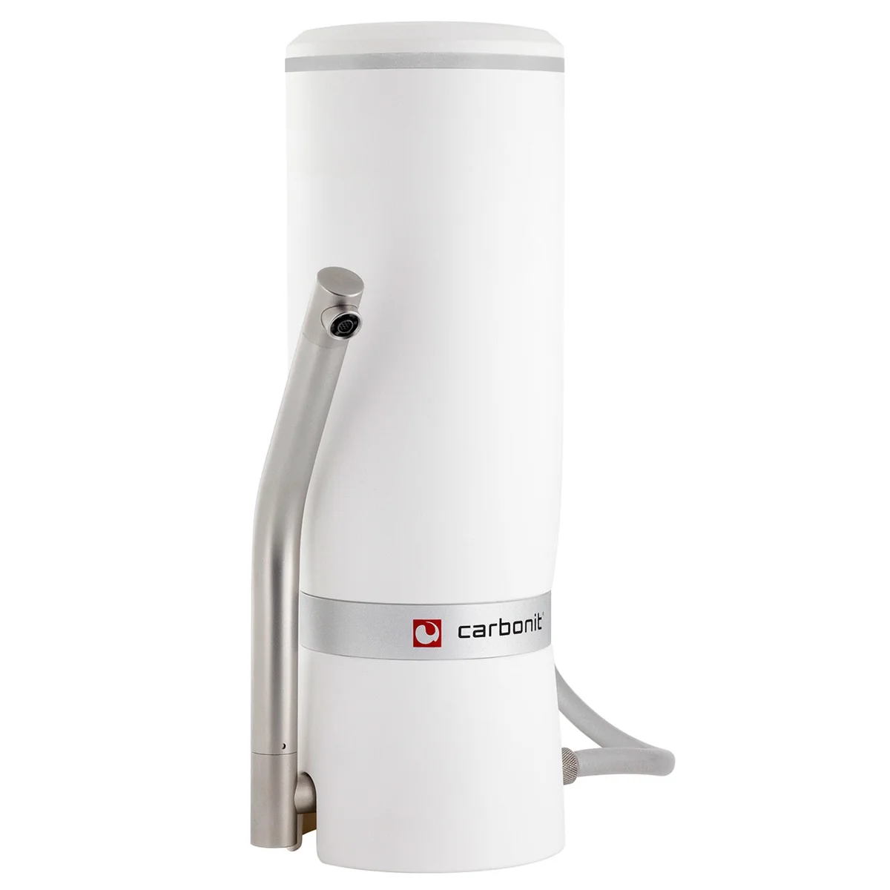

CARBONIT SANUNO Grande Sparset
SANUNO Grande - der beliebteste Wasserfilter auf dem deutschen Markt als Sparset – jetzt in der Designversion made in Germany. Schnell installiert, handlich, flexibel und natürlich 100% Carbonit®-Qualität. Einfach das Spezial-Umlenkventil an den Wasserhahn anschrauben - fertig. Auftischfilter für Küche und Bad zur Erze.
Technische Daten
| Artikel-Nr. | A001679 |
| Hersteller | Carbonit Filtertechnik GmbH |
| Typ | Wasserfilter > Aktivkohlefilter > Auftischfilter |
| Gewicht | 4.5 kg |
| Leistung | ca. 120 Liter pro Stunde bei einem Wasserdruck von 4 bar und einer Wassertemperatur von 10°C. Zur Entnahme von Schadstoffen siehe Datenblatt Filterpatrone NFP Premium |
| Maße | Filtereinheit ohne Anschlüsse (BxHxT): 145 x 322 x 110 mm. Schlauchlänge: 90 cm, |
| Material | Gehäuse aus PP, Schlauch aus zugelassenem Silikon mit Gewebeeinlage |
| Druckbereich | 2-7 bar |
| Temperaturbereich | Aus technischen Gründen ist der Einsatz nur bei Kaltwasser zulässig, vor Frost schützen |
| Anschrift | Industriestr. 2 29410 Salzwedel OT Dambeck |
| Website | www.carbonit.com |
Beschreibung
SANUNO Grande - der beliebteste Wasserfilter auf dem deutschen Markt als Sparset – jetzt in der Designversion made in Germany. Schnell installiert, handlich, flexibel und natürlich 100% Carbonit®-Qualität. Einfach das Spezial-Umlenkventil an den Wasserhahn anschrauben - fertig. Auftischfilter für Küche und Bad zur Erze.
Datenhinweis
Preis, Bild und technische Angaben stammen von der verlinkten offiziellen Produktseite. Varianten und Verfügbarkeit können sich ändern.